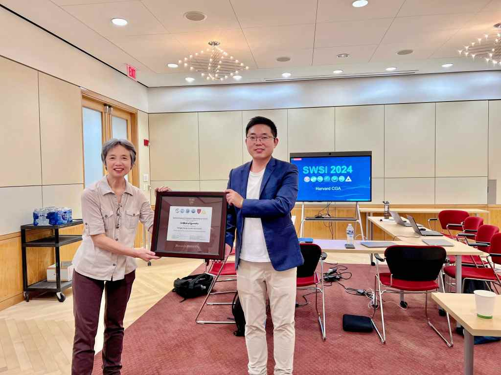
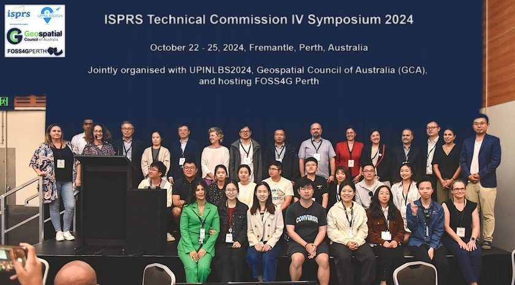
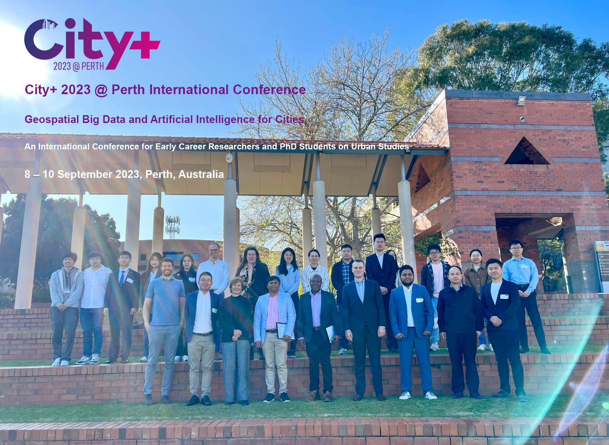

宋泳泽
简介
宋泳泽，澳大利亚科廷大学副教授、博士生导师，地理空间智能实验室负责人。澳大利亚优秀青年科学奖获得者，美国哈佛大学SDL Fellow研究员，英国皇家地理学会会士，德国学术交流中心人工智能网络研究员，国际数学地球科学协会IAMG委员。西澳大学、麦考瑞大学、香港理工大学博士生导师。担任《International Journal of Applied Earth Observation and Geoinformation》、《GIScience & Remote Sensing》、《Geoscientific Model Development》等多个国际一区期刊副主编，担任Cell子刊综合性期刊《iScience》等15个国际期刊编委，20个期刊特刊客座编辑，30余个国际会议主席或组委会委员，《Nature Communications》、《Nature Cities》、《Science Advances》等80余个国际期刊审稿人，受邀在哈佛、麻省理工、耶鲁、澳大利亚国立、新加坡国立等国际知名大学发表学术报告100余次。发表140余篇国际一区SCI 期刊论文，9篇论文入选ESI高被引论文，指导了来自全球五大洲20余个国家的青年学者，包括40多位博士生。提出30余个地理空间数据分析理论和新方法，例如第二维度空间关系、最优参数地理探测器、地理最优相似性、地理复杂性、广义异质性等。以第一作者发表的最优参数地理探测器OPGD模型论文是国际一区顶刊《GIScience & Remote Sensing》创刊40多年以来历史最高引用论文。开发地理空间分析R语言包"GD"等12个广泛应用的R语言开源包，全球下载使用量超过20万次。博士毕业于澳大利亚科廷大学 (优秀毕业生校长奖、优秀毕业生全球前0.1%)，本科 (优秀毕业生前1%) 和硕士 (优秀毕业生前1%) 毕业于中国地质大学 (北京)。
研究方向
研究方向：地理空间分析理论和方法，空间统计学，可持续基础设施，可持续发展，地球空间大数据和人工智能，遥感方法（城市和林火），巨型工程管理。
担任国际期刊《GIScience & Remote Sensing》副主编、《International Journal of Applied Earth Observation and Geoinformation》副主编、《Geoscientific Model Development》副主编、《Journal of Spatial Science》副主编、《All Earth》副主编。担任Cell子刊国际综合性期刊《iScience》以及国际期刊《International Journal of Digital Earth》、《Annals of GIS》、《Geo-spatial Information Science》、《Geomatica》、《Remote Sensing》、《Frontiers in Environmental Science》、《Resources, Environment and Sustainability》等编委。担任《Resources, Conservation and Recycling》等国际期刊客座编辑，及《Nature Communications》、《Nature Cities》、《Science Advances》等70余个国际学术期刊审稿人。
荣誉奖项
获得十余项国际或澳大利亚、中国等国家级奖项，包括澳大利亚优秀青年科学奖 TYP，全球50新星奖 (Geospatial World 50 Rising Stars)，全球十位前沿科技青年科学家之一，入学斯坦福大学全球前2%顶尖科学家榜单，地球科学和交叉学科领域全球前1%审稿人，澳大利亚位置数据分析国家级一等奖，澳大利亚海洋探索国家级二等奖和STEM国家级二等奖，科廷大学杰出科研奖，科廷大学全球影响力奖等。
学术贡献
提出一系列地理空间数据分析新模型、新方法，例如第二维度空间关系、地理最优相似性、地理复杂性、广义异质性模型、最优参数地理探测器、异质自相关性、局域分层异质性、空间关系交互探测模型、空间制衡模型等。在IJGIS、Nature子刊等发表130余篇国际一区SCI期刊论文，包括9篇高被引论文。开发最优参数地理探测器R语言包"GD"等12 个广泛应用的R语言开源包，全球下载使用量超过20万次。作为PI 主持十余项澳大利亚相关科研项目。
担任国际摄影测量与遥感学会ISPRS TC IV国际会议主席、City+城市研究青年学者国际会议主席、国际地球科学与遥感大会IEEE IGARSS教育委员会主席、澳大利亚人工智能联合大会AJCAI统筹主席，以及国际数学地球科学学会IAMG年会论坛主席，美国地理学会AAG年会论坛主席，欧洲地理信息科学年会AGILE科学委员会委员，大洋洲国家GIS和遥感理事会年会期刊协调员等，受邀为30余个国际会议做主题报告、担任论坛主席或科学委员会委员。
学术报告
受邀在美国哈佛大学、麻省理工学院、耶鲁大学、澳大利亚国立大学、新加坡国立大学、北京大学等国际知名大学、研究所和业界发表演讲或学术报告100余次。
指导了来自（大洋洲）澳大利亚、（欧洲）德国、斯洛伐克、爱尔兰、意大利、（亚洲）中国、以色列、新加坡、日本、印度、马来西亚、沙特阿拉伯、孟加拉国、越南、伊朗、巴基斯坦、不丹、（美洲）美国、哥伦比亚、（非洲）肯尼亚、马达加斯加等20余个国家的博士生和博士后。



招收博士生
欢迎博士生、青年研究员、访问学者、联合培养博士生加入我们。
澳大利亚科廷大学简介
科廷大学 (Curtin University) 位于西澳大利亚州首府、全球第6宜居城市珀斯 (Perth)。科廷大学在各类世界大学排名中均位于全球前200名，包括在U.S. News世界大学排名第156位。地球科学专业突出，采矿和矿业工程专业常年位居全球第2名，地球和海洋科学位于全球前40名。在澳大利亚40余所大学中，科廷大学的数学专业位于第1名，地球科学专业位于第2名。
招生研究方向和课题
- 地理空间分析基础理论和空间统计学基本方法
- 时空大数据和地球观测数据与可持续可再生能源
招生要求
- 对地理空间分析基础理论研究有浓厚兴趣，具有较强的数学和统计学基础，熟悉掌握R语言。
- 地理信息系统，测绘，遥感，计算机，数学等专业学士或硕士，有发表SCI期刊论文经验者优先。
- 满足科廷大学入学英语要求，即雅思6.5及以上，或等同于该要求的托福、PTE等科廷大学认可的英语成绩。尤其需要有较强的英语口语表达交流能力和写作能力。
- 本科和硕士成绩不低于3.0/4.0（80/100）。
优势
- 学制3年，完成毕业论文后，正常情况下不延期。入学后6个月内和学生共同制定合理、清晰、详细的研究计划。
- 满足要求且对研究方向感兴趣的优秀本科毕业生（学士）可申请直接攻读博士。
- 推荐在著名研究机构和顶尖跨国企业实习和参访机会。
- 与澳大利亚、欧洲、北美、亚洲等国际著名大学研究团队学术合作。
奖学金
- – Curtin University Scholarships for PhD/HDR students: HDR scholarships and funding website / Search scholarship opportunities
- – Research Training Program (RTP) Scholarships. Application period: July to August
- – Curtin HDR Scholarships. Application period: July to August
- – Important dates for future student scholarships
- – China Scholarship Council (CSC): Link at Curtin University / PDF instruction / Link at CSC. Application period: January to March
申请方式
请将以下材料发邮件至 yongze.song@curtin.edu.au
- 英文个人简历(CV)：包括联系方式、教育背景、发表文章、项目、奖项等。
- 一份2页的研究计划书(proposal)：应涵盖课题、数据、方法、研究进度以及参考文献列表（在第3页）。课题与我学院和团队的研究相关（例如建筑环境、可持续发展、可持续基础设施和城市、地理空间分析、遥感、建筑和基础设施管理等）。
- 英语成绩证明（如 IELTS、TOEFL 或 PTE）。具体英语要求见以下链接。
- 本科和硕士成绩单（英文；如果原件为中文，需要提供中文成绩单），包含平均分。
申请链接：Instructions and apply for PhD study. Degree: Doctor of Philosophy.
英语要求